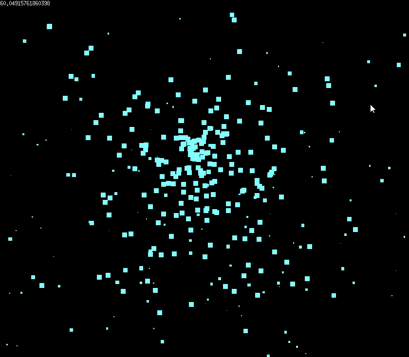

Portfolio · 2026
Étudiant en BUT Informatique — Développeur en formation
Je suis Louan Bobelin, étudiant en première année de BUT Informatique à l'IUT de Nantes. Passionné par le développement logiciel, j'aime construire des projets qui mêlent rigueur technique et logique de résolution de problèmes.
En dehors du code, je pratique la voile et je m'occupe de mes ruches avec mon père — une activité qui demande patience, observation et précision, et dont on extrait notre propre miel.
« La voile m'apporte flexibilité et adaptabilité — savoir réagir vite, lire son environnement et ajuster le cap. Travailler en centre de loisirs m'a appris à intégrer une équipe dès le premier jour, même sans se connaître. »

Simulation d'un moteur de particules en Go : gestion des entités, optimisation des performances et implémentation de plusieurs variantes de comportements physiques. Accent mis sur l'efficacité algorithmique et la modularité du code.
Jeu en Python sur terminal modélisant la concurrence pure et parfaite. Le joueur doit maintenir les équilibres du marché à chaque tour, en gérant offre, demande et prix dans un environnement dynamique.
Algorithmes d'analyse financière en Python : traitement de données historiques sur des crypto-monnaies et actions boursières, génération de courbes et rendus visuels pour détecter et interpréter les tendances de marché.
Jeu multijoueur fonctionnant sur réseau local (même WiFi), développé en Python avec une interface graphique dédiée. Gestion des connexions entre machines via adresses IP et synchronisation des états en temps réel.
Animateur en centre de loisirs pendant les vacances scolaires, auprès de groupes d'enfants de différentes tranches d'âge. Encadrement d'activités éducatives, sportives et créatives, gestion du quotidien et de la sécurité du groupe. Cette expérience m'a forgé une vraie capacité à m'intégrer rapidement dans une équipe nouvelle et à m'adapter à des imprévus.
Stage d'une semaine chez un réparateur informatique indépendant à Nord-sur-Erdre. Découverte du diagnostic et de la réparation de matériel informatique, observation de la relation client et des processus de maintenance.
Stage de trois jours chez un apiculteur professionnel. Découverte du métier, des techniques de gestion des ruches, de l'extraction et de la mise en pot du miel. Une activité que je pratique également avec mon père, sur nos propres ruches.